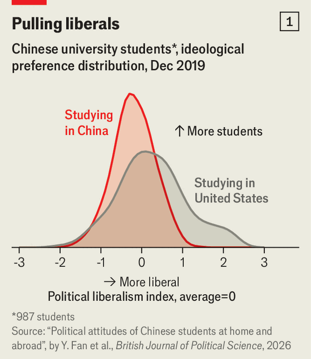
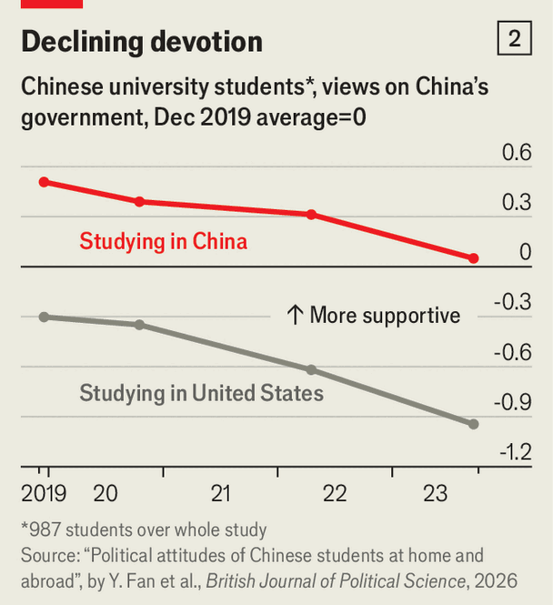

Chinese students abroad are more liberal than at home
They see faults in China’s system as well as in democracies, surveys show
Oct 1st 2026
America should expect that educating China’s young people will give it “moral, intellectual and commercial influence”, wrote Edmund James, a university president, in 1906. In subsequent years, dozens of China’s brightest went to study at the Massachusetts Institute of Technology on scholarships funded by the American government. Back then, American officials and teachers displayed a confident, missionary liberalism. They thought that educating young Chinese would help mould China in America’s image. But in recent years America has become less welcoming. The number of Chinese enrolled in American universities fell by nearly a third between 2019 and 2025, to 265,000.
China, however, is feeling confident. Its leader, Xi Jinping, wants more young Americans to visit and stay for their studies. On September 24th, while at the White House, Mr Xi said he hoped 100,000 young Americans would visit China or study there in the next five years. That is a far cry from the mere 350 American students resident there in 2022, amid the covid-19 pandemic and at a low point in bilateral relations. Mr Xi says that such exchanges could create “a new generation of ambassadors” to sustain the relationship between the two powers. Visiting China “breaks down cognitive barriers”, notes Xinhua, an official news agency. But does experience of a different political environment change people’s thinking?
New research by Fan Yingjie of Princeton and co-authors explores whether it does among Chinese in America. The researchers enlisted almost 1,000 Chinese freshmen for their research in 2019. Nearly 400 of them were in America and the rest—a control group—at public universities in China. Over the next four years, Ms Fan and her colleagues regularly put questions to the students to gauge their political leanings, as well as what they thought of China and its government.

The work is remarkable because research that involves asking Chinese citizens in China for their views on sensitive political matters has become increasingly rare under Mr Xi’s rule. The ability to compare the answers of such a group with those of Chinese students in America gives the research unusual empirical heft.
Mr Xi would surely be disappointed by the results. Ms Fan found that students’ ideological views were remarkably stable throughout their time in America—there was neither a backlash against Western liberalism nor a newfound zeal for it. Yet students (and presumably their families) who decide to study in America in the first place are much more liberal than their homebody peers (see chart 1). They are more likely to support free markets, are less socially conservative and are less nationalistic.
One possible reason is that Chinese women tend to outnumber men in studying in the West. Fran Martin of the University of Melbourne finds that some young women go overseas because of gender bias in China’s society and job market, and so are less traditional in their outlook.

Among Chinese students in America, ideological views did not change much while abroad, says Jennifer Pan of Stanford, a co-author of Ms Fan’s study. But they did update their views of how well the Communist Party is running China. Support for it started lower among those studying in America, and fell sharply during China’s draconian “zero-covid” lockdowns of 2020-22 (see chart 2). Approval for the regime, and general patriotic feeling, fell among undergraduates in China also, but more slowly. Being educated abroad, however, can highlight the West’s shortcomings. Ms Martin’s research shows that as life in China has become technologically advanced, offering many conveniences, some young Chinese studying in the West feel they are living “in a bit of a backwater”.
Although most of the cohort followed by Ms Martin moved back to China after graduation, some have since returned to Australia after experiencing the competitive pressures of China’s work culture and high youth unemployment. In the American study, the share of students planning to move home after graduation dropped from 40% in 2020 to just over 10% by 2023. As for Americans studying in China, vanishingly few stay. Study abroad may not reshape either country’s politics, or even the students themselves, but it does give some Chinese more choices. ■
Subscribers can sign up to Drum Tower, our new weekly newsletter, to understand what the world makes of China—and what China makes of the world.